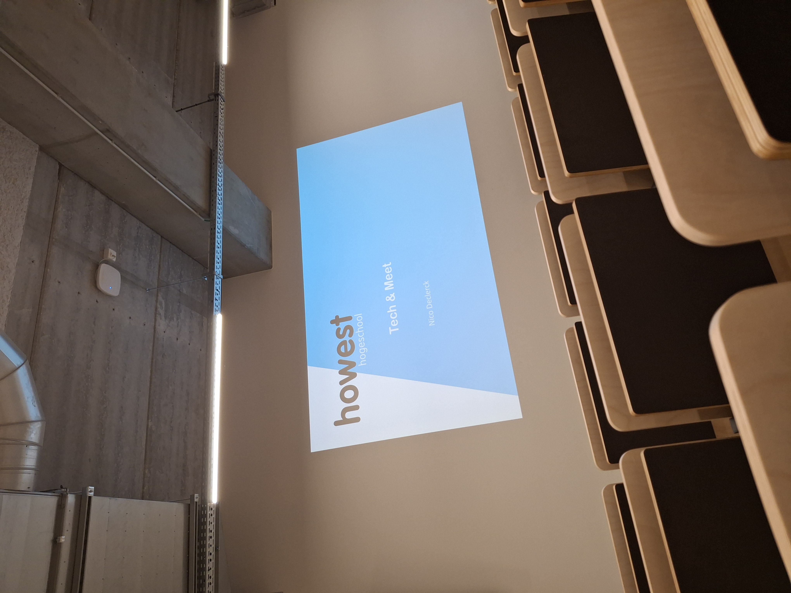
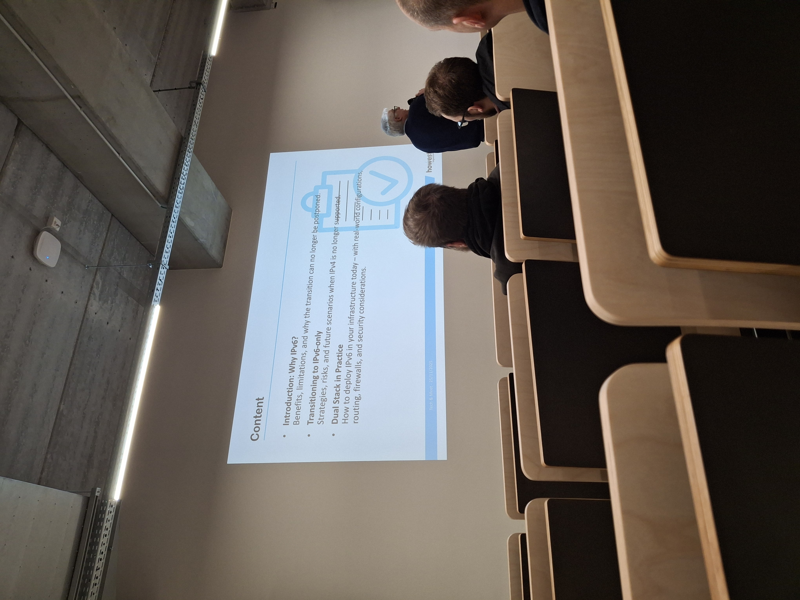
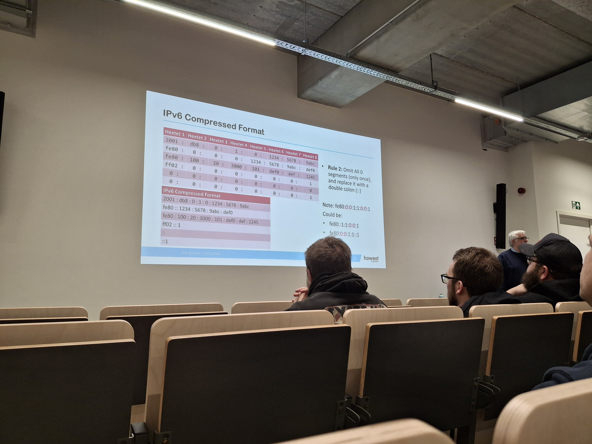

Transitioning to IPv6



This was a one-time evening event (19:00–20:30) focused on the transition from IPv4 to IPv6, aimed at students and companies looking to understand how to approach that transition in practice. The session was fairly technical, yet accessible enough for those with a basic understanding of networking. The goal was clear: to explain why IPv6 is necessary, how it came about, and what steps are needed to successfully migrate to it.
The speaker was Nico Declerck, an experienced network administrator and Linux system administrator. He is a lecturer in the Bachelor of Applied Informatics and Bachelor of CyberSecurity programs at Howest University of Applied Sciences and a researcher in the IT Cluster. In addition, he is a Cisco Networking Instructor in networking, network security, and cybersecurity operations, a Cisco Instructor Trainer, and an advisor for BiASC. Thanks to this combination of practical experience, teaching, and research, he was able to explain the transition to IPv6 both theoretically and in very concrete terms.
During the event, I learned a great deal about how to approach the transition to IPv6 and why that transition is inevitable. I had already been introduced to IPv4 and IPv6 in my school classes, but here we delved much deeper into the reasons behind the change and the practical steps to prepare a network for IPv6. It provided a clearer picture of the impact on existing infrastructure and the pitfalls that organizations need to be aware of.
What made the event particularly engaging were the frequent references to Bruges beers and the playful connection to IPv6 that was drawn each time. This added a lighthearted touch to what is otherwise a fairly technical topic and kept the audience’s attention firmly engaged. From an organizational standpoint, the session was also well-structured, with a clear flow and ample opportunity for questions.
Although I’m not a big fan of networking myself and this isn’t necessarily a field I plan to delve into further, I found it to be a very interesting and informative event. I would definitely attend a similar session again and highly recommend these kinds of lectures to students who want to better understand the transition to IPv6 and the challenges it presents.